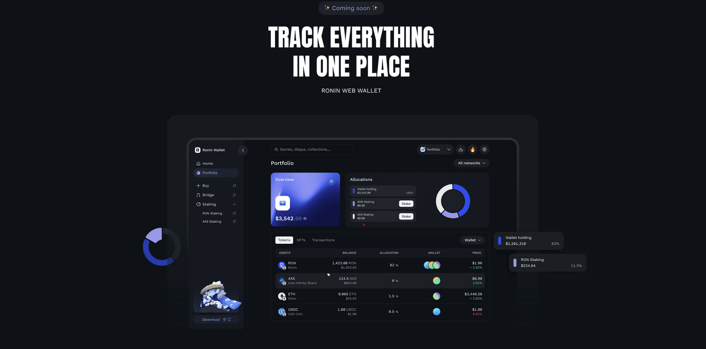

Your digital assets deserve more than just access—they deserve smart, streamlined security. That’s where Roninsteps in. Designed specifically for seamless interaction with the Ronin ecosystem, this wallet keeps your assets within arm’s reach while maintaining robust control over your access points. If you're wondering what is Roninand why it might be right for you, you're in the perfect place to find out.
Ronin Wallet is a browser extension and mobile application that acts as the bridge to access decentralized applications (dApps) on the Ronin blockchain. Think of it as your secure portal—offering complete management of assets, fast transactions, and user-centric features, all wrapped into a lightweight interface. Whether you’re minting assets, managing transactions, or engaging with dApps, the Ronin Wallet makes sure you can do so efficiently and securely.
Built with speed and simplicity in mind, it eliminates unnecessary clutter and puts the focus on you and your actions.
Setting up Ronintakes just a few minutes, whether you're on desktop or mobile. Here’s how to get started:
1. Visit the official Ronin Wallet site.
2. Choose your preferred platform:
o For desktop: Click “Download Extension” to install it on Chrome or Firefox.
o For mobile: Click on the respective App Store or Google Play links for direct Ronin Wallet download .
3. Once installed, open the Ronin Wallet app or extension.
4. Select “Create a New Wallet” or “Import using Seed Phrase” if you're restoring access.
5. Create a secure password and back up your recovery phrase. Write it down—don’t save it digitally.
6. After confirming your phrase, your Ronin Wallet login setup is complete.
Congratulations, you’re now set to explore the full capabilities of the wallet Ronin has crafted.
Yes, the design of the Roninis rooted in safety-first practices. Private keys and personal recovery phrases are stored locally on your device, meaning you're in full control—no centralized servers holding your sensitive data. The Ronin wallet extension never transmits your secret phrase or private keys, keeping everything secure on your end.
Plus, with secure transaction signing and password protection, every interaction through the wallet is safeguarded by layers of user-focused security protocols.
Once your wallet is set up, the possibilities within the Ronin ecosystem are at your fingertips. You can:
The user interface is intuitive, making it simple for both newcomers and experienced users to navigate.
While the Ronin extension is the most popular access point for desktop users, mobile users are fully supported via the official Ronin Wallet app. However, you do need to install either the extension or the mobile app to use it—there is no web-only version of wallet Ronin available without one of these tools.
This ensures a consistent and secure experience across platforms.
Lost access? No problem—as long as you backed up your secret phrase during setup, you’re good to go.
To recover:
1. Install the wallet app or extension again.
2. Open the wallet and select “Import Wallet”.
3. Enter your 12-word recovery phrase exactly as it was given.
4. Create a new password.
5. That’s it—your wallet is restored.
Always remember: never share your recovery phrase with anyone. No Ronin team member or service will ever ask for it.
Whether you're just starting or already active in the Ronin network, the wallet is an essential companion. Its clean design, tight security, and platform flexibility make managing your digital assets straightforward and safe.
Set it up once, back up your phrase, and you're ready to navigate the full Ronin ecosystem with confidence. The Ronin Wallet isn’t just a tool—it’s your personal access pass to everything that matters in your digital world.